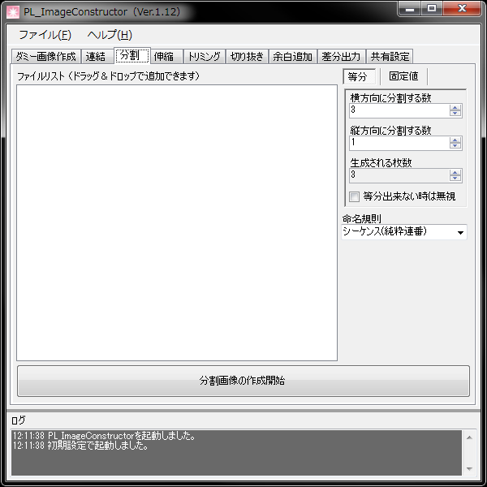

画像データを一定間隔で切り取り複数のファイルとして出力します。
- 等分
このタブが選択状態で開始ボタンを押すと等分モードで切り出します。
元画像を指定した値で等分します。
- 等分出来ない時は無視
等分する際、ピクセル数に余りが生じる画像をスキップします。
- 固定値
このタブが選択状態で開始ボタンを押すと固定値モードで切り出します。
指定した値のピクセル数で切り出します。
- 命名規制
出力される画像のファイル名のフォーマットを指定します。
- シーケンス（純粋連番）
単純な連番を付与します。連番の並びは、{Y * X_MAX + X}です。
Adobe After EffectsなどのPNGシーケンス読み込みの際などに便利です。
- XY数値付与
ファイル名の最後にX_Yの並びで値を追加します。
- YX数値付与
ファイル名の最後にY_Xの並びで値を追加します。